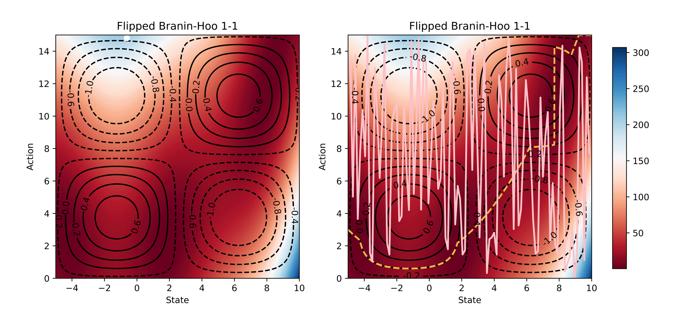
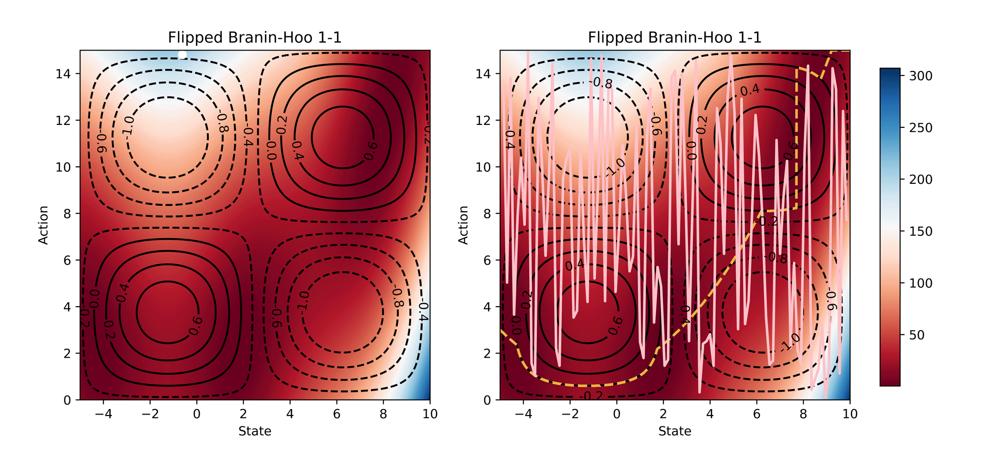

Accepted by IEEE RA-L / IROS 2022 Full Paper
Abstract. Controlling a legged robot to climb obstacles with different heights is challenging, but important for an autonomous robot to work in an unstructured environment. In this paper, we model this problem as a novel contextual constrained multi-armed bandit framework. We further propose a learning-based Constrained Contextual Bayesian Optimisation (CoCoBo) algorithm that can solve this class of problems effectively. CoCoBo models both the reward function and constraints as Gaussian processes, incorporate continuous context space and action space into each Gaussian process, and find the next training samples through excursion search. The experimental results show that CoCoBo is more data-efficient and safe, compared to other related state-of-the-art optimisation methods, on both synthetic test functions and real-world experiments. The real-world results—our robot could successfully learn to climb an obstacle higher than itself—reveal that our method has an enormous potential to allow self-adaptive robots to work in various terrains.
Learning Process
Visualisation of the learning process of Branin-Hoo test function from CoCoBo. We treat the first dimension of the Branin-Hoo function as state space and the second as action space; we also flip the state axis to create a variant of Branin-Hoo. The heat maps visualise the test functions and the contour lines demonstrate the constraint functions. We want to find the optimum state for every action and hence the optimum policy. We visualise the learnt policy (the pink solid line) compared with the ground-true optimum (the yellow dash line); and the training samples that are valid (white dots) and invalid (white crosses). The learnt policy successfully find the pattern of the contextual optimum and avoid the invalid regions in both test functions.
 

Synthetic Results
CoCoBo clearly outperforms all the other methods with respect to average simple regret in all cases—except Hartmann3-3, where all methods report a generally high regret.
Experimental Results
CoCoBo reaches the highest number of total evaluations during the training process (50 steps) and consistently achieves lower or equivalent regret in each individual state than other methods.
Code
Code is available on Github. Includes:
• Training/testing code (with BoTorch/Python).
• Simulation environments (with PyBullet).
• Program on the real robot (with TensorFlow/C++).
Bibtex
title={Learning to Climb: Constrained Contextual Bayesian Optimisation on a Multi-Modal Legged Robot},
author={Yu, Chen and Cao, Jinyue and Rosendo, Andre},
year={2022},
volume={7},
number={4},
pages={9881-9888},
doi={10.1109/LRA.2022.3192798}
}